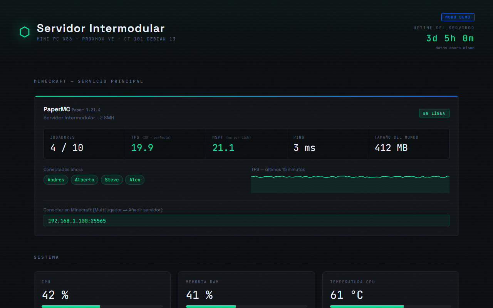

Proyecto intermodular de SMR, en desarrollo
Servidor personal con Proxmox VE
Un servidor de bajo coste sobre un mini PC. Cada servicio va en su contenedor Linux: un servidor de Minecraft, un panel web que muestra el estado en tiempo real y copias de seguridad automáticas a un disco externo.
La instalación está automatizada con scripts y documentada paso a paso. Lo voy probando en máquinas virtuales antes de llevarlo al equipo real.
- Proxmox
- Debian
- Bash
- Python
- Apache